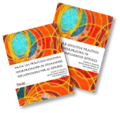
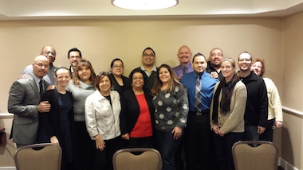

ASL/Spanish/English
Trilingual Interpreting:
- Complexity of Trilingual Interpreting
- NCIEC Trilingual Initiative:
- Frequently Used Terms
- Frequently Asked Questions (FAQs)
- Our Partners
Complexity of Trilingual Interpreting
With 23 countries speaking numerous dialects of Spanish, and with a high probability that individuals speaking one or more of these dialects reside in the United States, defining what is meant by “Trilingual Interpreting: American Sign Language/Spanish/English” is complicated. It does not refer to any one particular kind of translational act, nor does “trilingual interpreter” currently refer to one particular kind of practitioner. Just as the word “Deaf” is often used in a broad sense and refers to people who may be deaf, hard of hearing, or deafblind, “trilingual” alludes to more than its surface definition of English, Spanish, and ASL.
Bilingual interpreting “is a complex process that requires a high degree of linguistic, cognitive and technical skills in both English and American Sign Language (ASL), and while there are a large number of competencies shared by bilingual and trilingual interpreters, there also exist skills that are unique to the trilingual setting. Trilingual interpreters must be competent in three languages and their regional varieties (rather than two), understand and appropriately apply a variety of cultural norms, and seamlessly facilitate communication between three languages in real time.”
Treviño and Cancel illustrate the depth and breadth of the understanding and decision making that accompanies this specialized work. They note, that while an individual may see the task of trilingual interpreting as “decision making around three languages,” the task actually involves “decision making around seven discreet language factors and multiple registers.” Click for their illustration of the complexities of trilingual interpreting.
For more information regarding the complexities of trilingual interpreting, see Chapter 1 of Toward Effective Practice: Interpreting in Spanish-Influenced Settings (Hacia las Prácticas Efectivas: Interpretación en Situaciones Influenciadas por el Español) (2014) and go to http://www.discoverinterpreting.com/?trilingual_interpreting where three trilingual interpreters share their thoughts on trilingual interpreting.
Trilingual interpreting requires more knowledge and skills than bilingual interpreting. As such, trilingual interpreters should, and do, receive greater compensation for these abilities.
NCIEC Trilingual Initiative
The NCIEC Task Force
The trilingual ASL/Spanish/English community has made NCIEC acutely aware of the vast need for culturally and linguistically competent trilingual interpreters. In response, NCIEC established the NCIEC Trilingual Task Force in early 2011.
Comprising fourteen representatives of the Latino Deaf Community, the trilingual interpreting community, and the Consortium, the NCIEC Trilingual Task Force is charged with increasing the number of qualified interpreters able to interpret between ASL, Spanish, and English. It accomplishes this goal by enhancing leadership and awareness, determining effective practices around interpreting in trilingual settings, and creating and disseminating evidence-based educational opportunities and resources.
Purpose and Goals
Since its inception, the NCIEC Trilingual Task Force has grasped its charge with a sense of purpose and dedication to quality and timely outcomes. Within a span of only a few years, the Task Force has engaged in Leadership Training, three-day Immersion Programs in Spanish and in ASL, a four-day Train the Trainer Seminar, and numerous workshops and trainings. Go to the Calendar of Events for currently scheduled workshops and trainings throughout the US. The hallmark of Task Force’s work, though, is represented in the educational Resources it has developed. Within four publications, it is a wealth of information that is gleaned from evidence-based discovery and empirical research, while its Directory of Interpreters Working in Spanish-Influenced Settings, located on the Mano a Mano website, provides the field with a mechanism to locate an interpreter with these specialized skills.
The NCIEC Trilingual Task Force operates within a set of basic linguistic and cultural beliefs. We ask you to join us in promulgating these culturally critical tenets.
Committed to an “of, by, for, and with” Philosophy
- The Latinx community is a rich diverse composition of individuals; a community rooted in Spanish language and culture. Their identities encompass a myriad of factors that intersect to strengthen and challenge their lives, including socioeconomics, language, education, gender and sexuality, to name just a few.
- Teachers and mentors of aspiring trilingual interpreters play a critical role in promulgating or inhibiting an “of, by, for and with” teaching culture. Educators who teach using this Curriculum Guide must be individuals who understand and experience all of the cultures under consideration.
- In a specialization as complex as trilingual interpreting, the role of the Deaf interpreter is pivotal to an interpreting endeavor, not simply a component of it.
- Anyone engaging in the act of training trilingual interpreters must be committed to the self-determination philosophy of “of, by, for and with,” a statement that commands “nothing ‘for’ us without us!”
Thank you!
The NCIEC Trilingual Task Force is very grateful for the support and guidance of its partners. Their wealth of knowledge, passion for the field, and willingness to give of time and energy has made these resources possible. In partnership, we can accomplish much. Thank you!
Resources:
NCIEC Educational Materials

Choose a resource from the links on the right.
One of the primary goals of the NCIEC Trilingual Task Force is to identify gaps in knowledge as it pertains to interpreting in Spanish-influenced settings, make recommendations as to how best “fill the gaps” and then assist in the development of educational materials that fill the gaps and promote evidence-based educational opportunities. The Task Force identified the need for a standardized curriculum that addresses real-world ASL/Spanish/English interpreting experiences.
NCIEC is proud to partner with the ASL/Spanish/English interpreting community to provide you with a slate of educational resources specific to the teaching and training of individuals who aspire to become competent ASL/Spanish/English interpreters.
- Toward Effective Practice: Interpreting in Spanish-Influenced Settings (PDF)
- Hacia las Prácticas Efectivas: Interpretación en Situaciones Influenciadias por el Español (PDF)
- Compendium of Essential Readings for Interpreters
- Interpreting in Spanish-Influenced Settings: Video Vignettes of Working Trilingual Interpreters (ASL/Spanish/English)
- Interpreting in Spanish-Influenced Settings: A Curriculum Guide (2015)
- La interpretación en situaciones influenciadas por el español: Una guía para el plan de estudios
While each of the resources below can stand-alone, bundled together they provide an educator with the information, resources, and tools they will need to build a trilingual-driven curriculum and effectively apply the activities specified in the publication, Interpreting in Spanish-Influenced Settings, A Curriculum Guide. It is recommended that you start your review of the resources by perusing the publication Toward Effective Practice: Interpreting in Spanish-Influenced Settings (Hacia las Prácticas Efectivas: Interpretación en Situaciones Influenciadas por el Español) (2014).
As you consider utilization of these tools as an educator, a trainer or a mentor, please do keep in mind the NCIEC Trilingual Task Force’s Basic Tenets. Educators, trainers and mentors who teach using this Curriculum Guide should be individuals who understand and experience all three of the cultures under consideration.
Accessing the Resources
Online Access
All of the NCIEC resources are available online and and can be downloaded using the links above.
By Request
A limited number of Interpreters in Spanish-Influenced Settings: Video Vignettes of Working Interpreters (ASL/Spanish/English) is available on DVD.
Please request your DVD here.
By Purchase
Toward Effective Practice: Interpreting in Spanish-Influenced Settings (Hacia las Prácticas Efectivas: Interpretación en Situaciones Influenciadas por el Español) (2014) and Interpreting in Spanish-Influenced Settings: A Curriculum Guide (2015) can also be purchased as bound hard-copy books at Lulu.com.
Directory of ASL/Spanish/English Interpreters
The NCIEC Task Force cannot stress enough the importance of using qualified trilingual interpreters. To promote this belief, Task Force members worked with Mano a Mano to create a Directory of Interpreters Working in Spanish-Influenced Settings. Please visit the Directory if you are in need of a trilingual interpreter. If you are a trilingual interpreter and would like to be listed in the Directory, please complete the online form to request inclusion in the Directory.
Training Opportunities:
Directory of NCIEC Trainers
The ultimate goal of the NCIEC Trilingual initiative is to promote and/or generate educational events that reflect the trilingual domains and competencies identified and vetted by the field. In tandem, the NCIEC Trilingual Task Force is dedicated to ensuring that workshop content and instructional approaches are on target and effective by engaging in rigorous evaluation.
As one means of better ensuring successful outcomes, the NCIEC Task Force invited twelve experienced trilingual interpreters to participate in a four-day intensive seminar that provided them the opportunity to: take a “drill-down”, manipulative view of the content in the four curriculum-based publications; look at and employ teaching strategies based in current best practices in adult teaching; and enhance their knowledge of evaluation methodology.
At the completion of the Seminar, participants became NCIEC’s first community of trilingual trainers. They comprise the Directory of NCIEC ASL/Spanish/English Trainers. A number of their trainings will be offered in the spring and summer of 2015. Click here to learn more about their upcoming trainings.
Train the Trainer Seminar Participants and Facilitators, April 21-24, 2016, Silver Spring, MD
 NCIEC Trilingual Train the Trainer Seminar Participants and Facilitators, January 2015, Silver Spring, MD
Trainer Attributes and Qualifications
All Trainers listed in the Directory possess the following minimum level of qualification.

Knowledge of the subject matter covered in the Curriculum Guide.
Degrees awarded from accredited colleges and universities.
Interpreting certification.
Several years in the field as an “in the trenches” trilingual practitioner or consumer of trilingual interpreting services.
Direct racial/ethnic life experiences in the Latinx community.
Commitment to the philosophy of… “of, by, for, and with the Deaf” and Deaf/hearing co-teaching.
Working knowledge of adult learning and individual learning styles.
An ability to communicate information in a creative and innovative way.
An understanding of the importance of evaluation, both pre- and post-assessments, to measure learning.
For online courses, an understanding of technology and how to most effectively design and teach online courses.
Directory of NCIEC Trainers
| First Name | Last Name | City/State | Contact Information |
| Leonardo | Álvarez | Bronx, NY | iterpnyc@gmail.com |
| Esteban | Amaro | Chicago, IL | eamaro09@gmail.com |
| Juan | Bernal | Berwyn, IL | mrjuanbernal@outlock.com |
| Masanda A. | Boyd | New York, NY | masandaboyd@gmail.com |
| Edwin | Cancel | Bend, OR | edwcancel@gmail.com |
| Ana Cecilia | Hernandez | Miami, FL | achernan@bellsouth.net |
| Gloria | Herrera | Naperville, IL | Gollin41@yahoo.com |
| Caleb | Lopez | Rancho Cordova, CA | Calito7013@gmail.com |
| Claudia | Mansilla | Santa Fe, NM | mansillacd@gmail.com |
| Nora | McAllister | Welasco, TX | noramcallister@outlook.com |
| Paola | Morales | Philadelphia, PA | moeabdul2@yahoo.com |
| Arlene | Narváez | Los Angeles, CA | arlene_narvaez@hotmail.com |
| Orlando | Obeso | Albuquerque, NM | orlando.obeso1@gmail.com |
| Ricardo I. | Ortiz Román | San Juan, PR | r.ortiz.terp@gmail.com |
| Rachel | Postovoit | San Diego, CA | postovoit.rach@gmail.com |
| Buck Tomas | Rogers | Puyallup, WA | buck.t.rogers@gmail.com |
| Jorge | Santiago O´Neill | Carolina, PR | turiterp@gmail.com |
| Rafael | Treviño | Miami, FL | rtrevino@mdc.edu |